Building Mobile Applications
withHTML/Js/Css
andPhonegap
Program
- Native vs Cross platform
- Phonegap Architecture
- Javascript - Css - Html
- jQuery Mobile
- Yeoman workflow for webapps
- Development Phonegap
- Phonegap build
- AppStore - Google Play
Matteo Magni
Twitter @ilbonzo
Github @ilbonzo
Yeah!
Advantages
- write one application
- support different mobile platforms and web
- exploit knowledge of web technologies
- can use sensors and native features of the phone
- can publish on store
mmm?
Disadvantages
- performance
- lack of widget UI
- Identical UX on all platforms
- larger executable size
Alternative
- PhoneGap (HTML/JS)
- Appcelerator Titanium (JS)
- Corona SDK (lua)
- Marmalade (Visual C++)
PhoneGap was originally developed by Nitobi, a company acquired by Adobe in 2011. After it was acquired, Nitobi donated the PhoneGap code base to the Apache Software Foundation (ASF) under the project name Cordova.
Cordova is the name of the street in Vancouver where Nitobi's offices were located and where the company create the first version of framework
Cordova vs Phonegap
"PhoneGap is a distribution of Apache Cordova. You can think of Apache Cordova as the engine that powers PhoneGap, similar to how WebKit is the engine that powers Chrome or Safari.
(Browser geeks, please allow me the affordance of this analogy and I’ll buy you a beer later.)"
PhoneGap is a free and open source framework that allows you to create mobile apps with
html, css and javascript.
html, css and javascript.
Think of PhoneGap as a web view container that is
100% width and 100% height
100% width and 100% height
Phonegap workflow
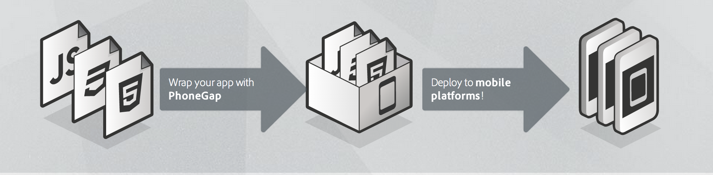support platform
- iOS
- Android
- Windows 8
- Windows Phone 7 and 8
- BlackBerry 5.x+
- WebOS
- Symbian
- Tizen
- Ubuntu
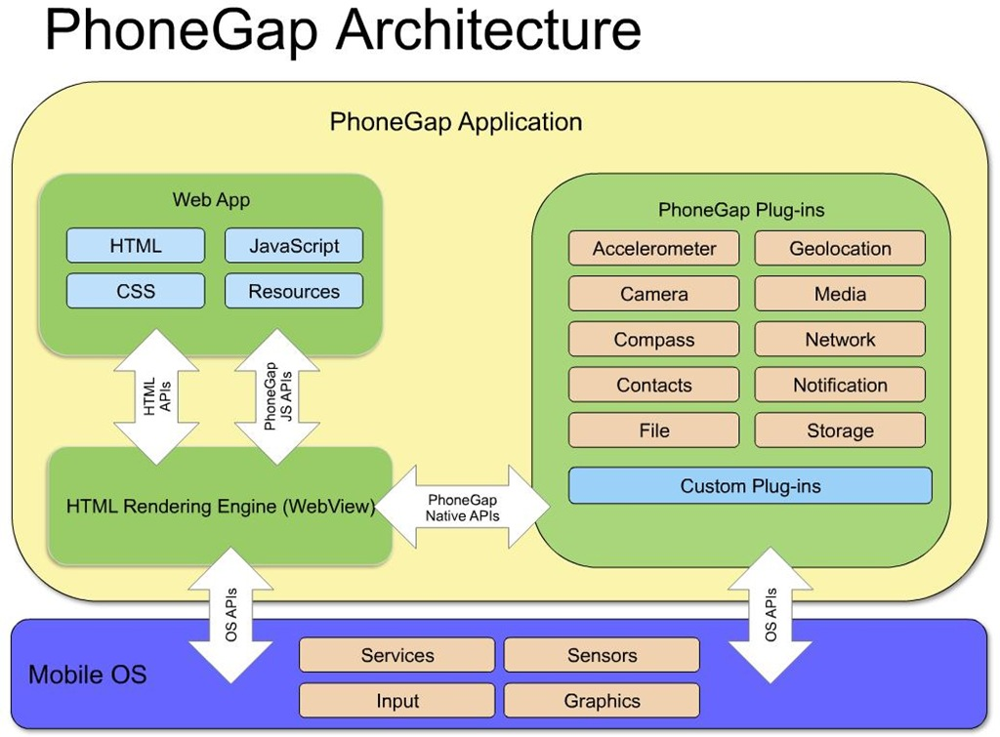
platform details for simulator
- Android emulator on Linux, Windows, OSx
- iOS only in OSx
- Blackberry on Windows and OSx
- Windows Phone on Windows
Ripple
Emulate app in desktop browser with Chrome extension Ripple
Html5
- WebSQL
- XHR
- <audio>
- <video>
Viewport
The viewport meta tag The viewport meta tag was introduced by Apple with iOS 1.0 and is largely supported in all the major mobile browsers. When a web page doesn't fit the size of the browser, the default behavior of a mobile browser is to scale it. The viewport meta tag is what you need in order to have control over this behavior.
jQuery
"jQuery: The Write Less, Do More, JavaScript Library"
"jQuery is defintely the way"
Performance
I use jQuery and I love it, but I will not advise the use of jQuery when building a hybrid multi-page app. Also, if the jQuery library is downloaded once, the file is parsed each time it's included in an HTML page. Performance on mobiles is crucial. If you don't seriously consider optimizing each aspect of your app, you risk losing users. Bad performance can also lead to high battery consumption.
Single Page Web App
-
when
- frequently navigation
- the pages change partially
- critical performance
Optimization
- use sprite css
- restrict access to the dom
WTF???
alternative to jQuery Mobile
jQuery Mobile layout
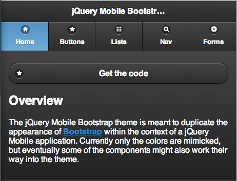
Buttons
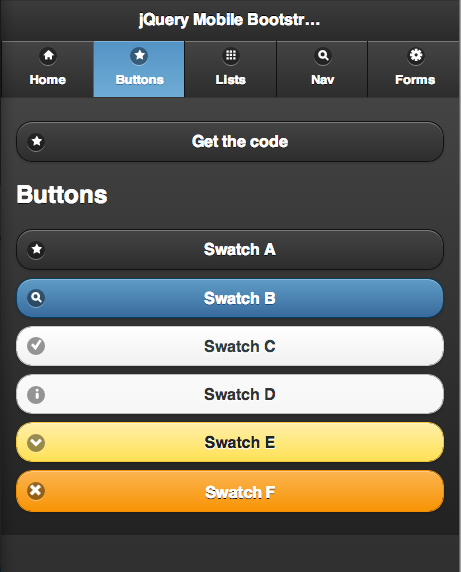
list
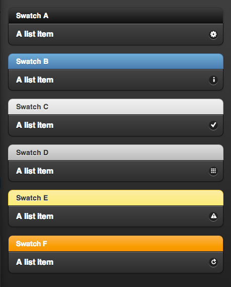
navigation
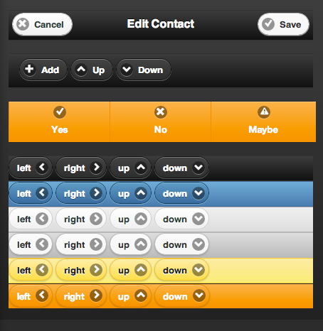
forms
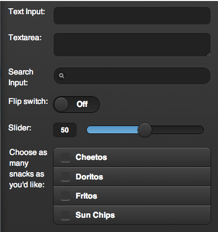
HTML5 Markup-driven configuration makes it easy to learn
Data Attributes
<div data-role="page">
<div data-role="header">...</div>
<div role="main" class="ui-content">...</div>
<div data-role="footer">...</div>
</div>
-
Nostro tema
Evvent demo app
https://github.com/ilbonzo/Evvent
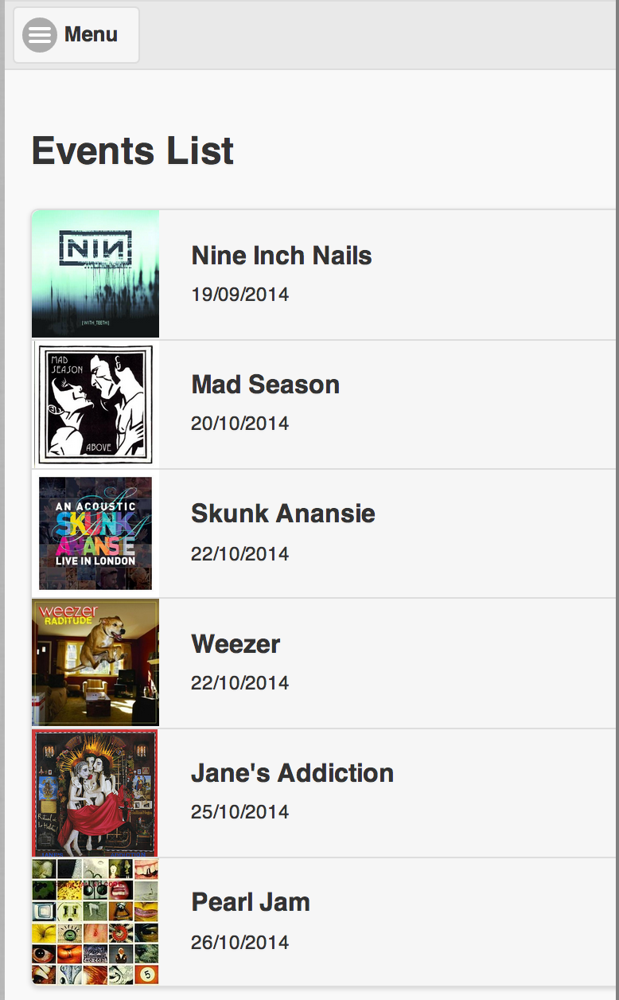
Evvent
- events list
- event view
- layout
- ...
-
develop a prototype
Frontend developer
- code organization
- repetitive tasks
- tool and librery dependency
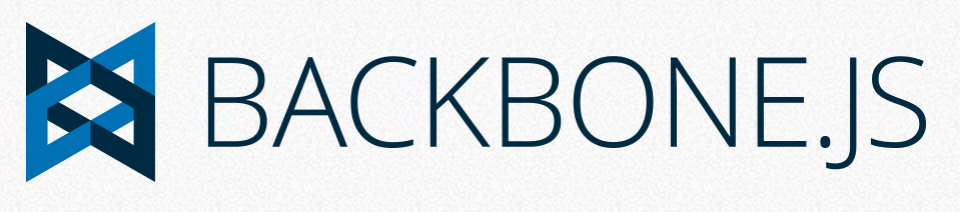
backbonejs.org
" JavaScript library with a RESTful JSON interface and is based on the model–view–presenter (MVP) application design paradigm"
MV* framework
- Routing
- Model
- View
- Template
- Collection
Single page webapp
Alternative
Backbonejs routing
routes: {
'': 'home',
'events': 'events',
'events/:id': 'getEvent'
},
// Home method
home: function() {
var home = new HomeView({'el': '#content'});
},
// events method
events: function() {
var events = new EventsView({'el': '#content'});
},
backbonejs model
var EventModel = Backbone.Model.extend({
defaults: {
id: '',
title: '',
date: ''
}
});
backbonejs view
var EventView = Backbone.View.extend({
template: JST['app/scripts/templates/event.ejs'],
});
javascript template
https://code.google.com/p/trimpath/wiki/JavaScriptTemplates<h2>Event View</h2>
<p>Evento con id: <%= id %></p>
package.json
{
"name": "evvent-web",
"version": "0.0.0",
"dependencies": {},
"devDependencies": {
"grunt": "~0.4.1",
"grunt-contrib-copy": "~0.4.0",
"grunt-contrib-concat": "~0.3.0",
"grunt-contrib-coffee": "~0.7.0",
"grunt-contrib-jst": "~0.5.0"
},
"engines": {
"node": ">=0.8.0"
}
}
$ npm install
$ npm update
GRUNT
+
BOWER
+
YEOMAN
Yeoman
yeoman.ioTHE WEB'S SCAFFOLDING TOOL FOR MODERN WEBAPPS$ npm install -g yoThis will install Grunt and Bower automatically.
Grunt
npm install -g grunt
Gruntfile.js
module.exports = function (grunt) {
// show elapsed time at the end
require('time-grunt')(grunt);
// load all grunt tasks
require('load-grunt-tasks')(grunt);
...
}
npm install -g grunt-cli
# grunt installato per ogni progetto
npm install grunt
Grunt plugin
- copy
- concat
- cssmin
- uglify
grunt
$ grunt serve
bower.json
Bower
{
"name": "evvent-web",
"version": "0.0.0",
"dependencies": {
"jquery": "~1.9.0",
"underscore": "~1.4.3",
"backbone": "~1.0.0",
"requirejs": "~2.1.5",
"requirejs-text": "~2.0.5",
"modernizr": "~2.6.2",
},
"devDependencies": {}
}
.bowerrc
{
"directory": "app/bower_components"
}
Example
https://github.com/ilbonzo/Evvent/tree/master/example-
Yeoman generator
- github.com/bauschan/generator-jquery-mobile
-
npm install -g generator-jquery-mobile - evvent.dev:9001
-
- github.com/yeoman/generator-backbone
-
npm install -g generator-backbone - evvent.dev:9002
-
Example
https://github.com/ilbonzo/Evvent/tree/master/example- github.com/yeoman/generator-mobile
-
npm install -g generator-mobile - evvent.dev:9003
-
- www.npmjs.org/package/generator-phonegap
npm install -g generator-phonegap
- evvent.dev:9004
Altre utility
- Underscore
- requirejs
- Requirejs-text
- Modernizr
requirejs
<!DOCTYPE html>
<html>
<head>
<title>My Sample Project</title>
<!-- data-main attribute tells require.js to load
scripts/main.js after require.js loads. -->
<script data-main="scripts/main"
src="scripts/require.js"></script>
</head>
<body>
<h1>My Sample Project</h1>
</body>
</html>
main.js
require.config({
shim: {
underscore: {
exports: '_'
},
...
},
paths: {
underscore: '../bower_components/underscore/underscore',
...
}
});
Partiamo dal generator-backbone
https://github.com/yeoman/generator-backbone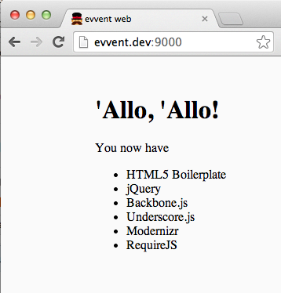
Aggiungiamo jquery mobile
https://github.com/jobrapido/jquery-mobile-bower{
"name": "evvent-web",
"version": "0.0.0",
"dependencies": {
"jquery": "~1.9.0",
"underscore": "~1.4.3",
"backbone": "~1.0.0",
"requirejs": "~2.1.5",
"requirejs-text": "~2.0.5",
"modernizr": "~2.6.2",
---
"jquery-mobile-bower" : "latest"
---
},
$ bower update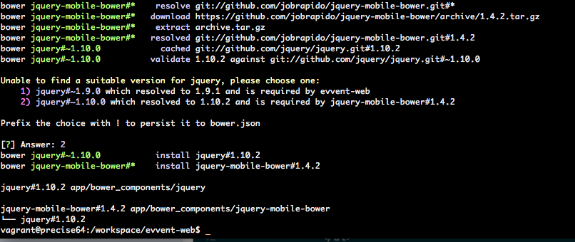
aggiungiamo a requirejs
/*global require*/
'use strict';
require.config({
shim: {
...
jquerymobile: {
deps: [
'jquery'
],
exports: 'jqm'
}
},
paths: {
....
jquerymobile:
'../bower_components/jquery-mobile-bower/
js/jquery.mobile-1.4.2'
}
});
require([
'backbone', 'jquerymobile'
], function (Backbone) {
Backbone.history.start();
});
add css and data attributes
# index.html
<link rel="stylesheet"
href="bower_components/jquery-mobile-bower/
css/jquery.mobile-1.4.2.css”>
<div data-role="page" data-theme="a" id="index">
<div data-role="header">
<h1>Evvent</h1>
</div>
</div>
strict mode
strict modeConverting mistakes into errors
Non-strict mode |
Strict mode |
|
|
throws ReferenceError"Strict mode forbids implicit creation of global property 'a'" |
Non-strict modeYOLO mode |
Strict mode |
|
|
throws ReferenceError"Can't find variable: a" |
Backbone structure
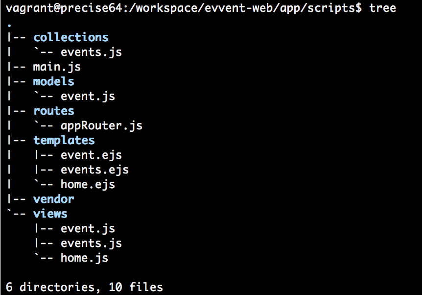
Yeoman scaffolding
vagrant@precise64:/workspace/evvent-web$ yo backbone:router appRouter
create app/scripts/routes/appRouter.js
Home
vagrant@precise64:/workspace/evvent-web$ yo backbone:view home
create app/scripts/templates/home.ejs
create app/scripts/views/home.js
Event
vagrant@precise64:/workspace/evvent-web$ yo backbone:model event
create app/scripts/models/event.js
vagrant@precise64:/workspace/evvent-web$ yo backbone:view event
create app/scripts/templates/event.ejs
create app/scripts/views/event.js
Events
vagrant@precise64:/workspace/evvent-web$ yo backbone:collection events
create app/scripts/collections/events.js
vagrant@precise64:/workspace/evvent-web$ yo backbone:view events
create app/scripts/templates/events.ejs
create app/scripts/views/events.js
json for data
[
{
"id": "53133a5de974d00e11e858af",
"title": "Nine Inch Nails",
"date": "19/09/2014",
"image": "nin.jpg"
},
{
"id": "53133a5de974d00e11e85eaf",
"title": "Mad Season",
"date": "20/10/2014",
"image": "mad-season.jpg"
},
...
]
Development PhoneGap app
Phonegap Architecture
cli
Cordova Cli
https://github.com/apache/cordova-cli
$ npm install -g cordova
$ npm install -g cordova
Cordova Cli
$ cordova create evvent-cordova com.ilbonzo.evvent "Evvent"
$ cd evvent-cordova
Cordova Cli tree
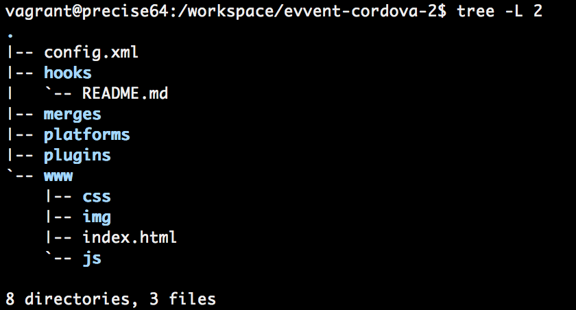
Phonegap Cli
https://github.com/phonegap/phonegap-cli
$ npm install -g phonegap
$ npm install -g phonegap
Phonegap Cli
$ phonegap create evvent-phonegap com.ilbonzo.evvent "Evvent"
$ cd evvent-phonegap
Phonegap Cli tree
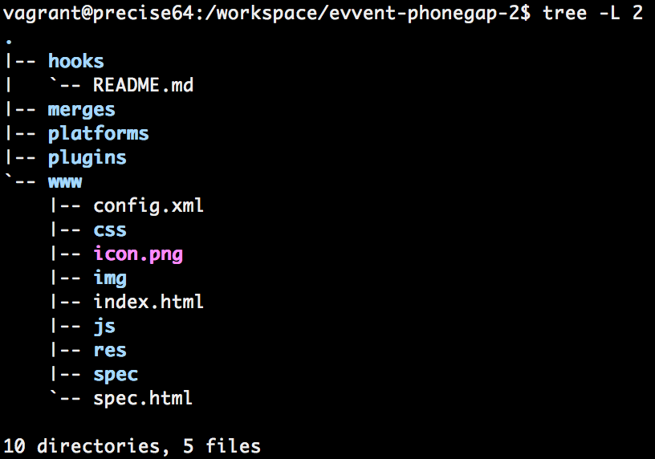
Simulators
iOS
iOS
Cordova
$ cordova platform add ios
iOS
-
$ cordova prepare [platform...] -
copies files into the specified platforms, or all platforms. It is then ready for building by Eclipse, Xcode, etc.
-
$ cordova build [[ [...]]] -
an alias for cordova prepare followed by cordova compile
run ios project
Once created, you can open it from within Xcode. Double-click to open the evvent-cordova/platforms/ios/Evvent.xcodeproj file.
emulate
-
$ cordova emulate [[ [...]]] -
launch emulators and deploy app to them. With no parameters emulates for all platforms added to the project, otherwise emulates for the specified platforms
serve
-
$ cordova serve [port] -
launch a local web server allowing you to access each platform's www directory on the given port (default 8000).
Phonegap Cli
command
- create
create a phonegap project - build
build the project for specific platform - install
install the project on a specific platform - run
build and install the projectfor specific platform - platform [command] update a platform version
- version output version number
iOS
Phonegap
$ phonegap build ios
serve
-
$ phonegap serve [port]
ios-deploy
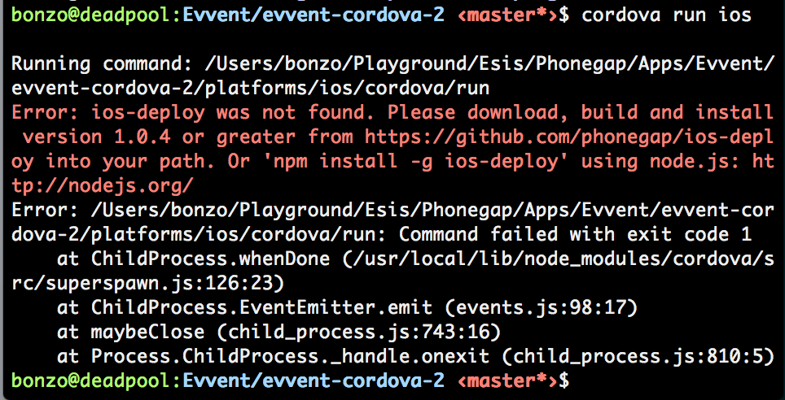ios-deploy
Install and debug iPhone apps from the command line, without using Xcodehttps://github.com/phonegap/ios-deploy
-
$ npm -g install ios-deploy
ios-sim
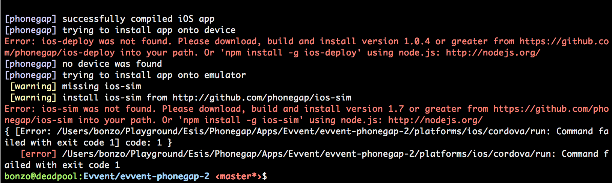ios-sim
Command-line application launcher for the iOS Simulatorhttps://github.com/phonegap/ios-sim
-
$ npm -g install ios-sim # or $ brew install ios-sim
Android
Android
http://docs.phonegap.com/en/3.0.0/guide_platforms_android_index.md.html#Android%20Platform%20Guide#~/.bashrc
export PATH=${PATH}:~/adt-bundle/sdk/platform-tools:~/adt-bundle/sdk/tools
$ brew install ant
Android
Cordova
$ cordova platform add android
eclipse new project from existing source
add adt
$ cordova run android
Phonegap
$ phonegap build android
Phonegap
$ phonegap run android
Deviceready
var app = {
// Application Constructor
initialize: function() {
this.bindEvents();
},
// Bind Event Listeners
//
// Bind any events that are required on startup. Common events are:
// 'load', 'deviceready', 'offline', and 'online'.
bindEvents: function() {
document.addEventListener('deviceready', this.onDeviceReady, false);
},
// deviceready Event Handler
//
// The scope of 'this' is the event. In order to call the 'receivedEvent'
// function, we must explicity call 'app.receivedEvent(...);'
onDeviceReady: function() {
app.receivedEvent('deviceready');
},
// Update DOM on a Received Event
receivedEvent: function(id) {
var parentElement = document.getElementById(id);
var listeningElement = parentElement.querySelector('.listening');
var receivedElement = parentElement.querySelector('.received');
listeningElement.setAttribute('style', 'display:none;');
receivedElement.setAttribute('style', 'display:block;');
console.log('Received Event: ' + id);
}
};